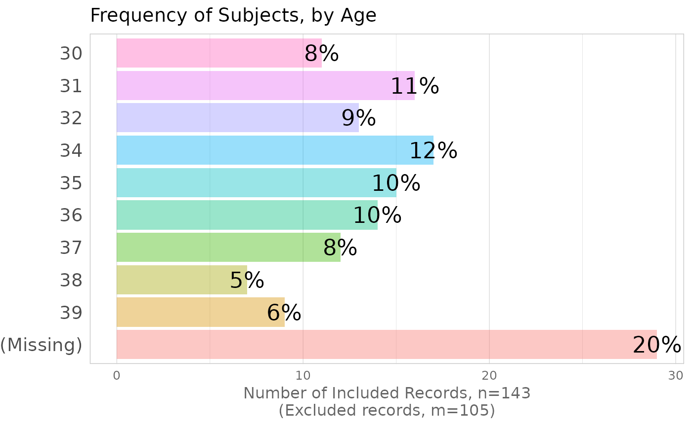

Generate a Histogram for a character or factor variable.
Source: R/histogram-discrete.R
histogram_discrete.RdGenerate a histogram for a character or factor variable. This graph is intended to quickly provide
the researcher with a quick, yet thorough representation of the continuous variable. The additional annotations may not
be desired for publication-quality plots.
Arguments
- d_observed
The
data.framewith the variable to graph.- variable_name
The name of the variable to graph.
character.- levels_to_exclude
An array of of the levels to be excluded from the histogram. Pass an empty variable (ie,
character(0)) if all levels are desired; this is the default.character.- main_title
The desired title on top of the graph. Defaults to
variable_name, with underscores replaced with spaces. If no title is desired, pass a value ofNULL.character.- x_title
The desired title on the x-axis. Defaults to the number of included records. If no axis title is desired, pass a value of
NULL.character.- y_title
The desired title on the y-axis. Defaults to ``Frequency''. If no axis title is desired, pass a value of
NULL.character.- text_size_percentage
The size of the percentage values on top of the bars.
character.- bin_width
(This parameter is included for compatibility with other graphing functions. It should always be
1for discrete and boolean variables.)- font_base_size
Sets font size through ggplot2's theme.
Examples
ds <-
datasets::infert |>
tibble::as_tibble()
# Simulate missing values
ds$education[c(3:9, 20:29, 80:95)] <- NA
ds$age[ c(5:8, 14:22, 70:85)] <- NA
# Don't run graphs on a headless machine without any the basic graphics packages installed.
if( require(grDevices) ) {
# Simple Cases
histogram_discrete(
d_observed = ds,
variable_name = "education"
)
histogram_discrete(
d_observed = ds,
variable_name = "age"
)
# Variable has no nonmissing values
histogram_discrete(
d_observed = ds[100:200, ],
variable_name = "age"
)
# Adjust cosmetics of bar-graph/histogram
histogram_discrete(
d_observed = ds,
variable_name = "age",
levels_to_exclude = c(21:29, 40:44), # Show only subjects in their 30s.
main_title = "Frequency of Subjects, by Age"
)
}
